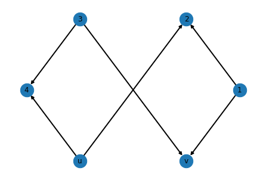

#@title Imports for graphs (NetworkX and matplotlib)
import networkx as nx
#import matplotlib.pyplot as pltGraphs in Python
This notebooks describes various tools that can be used to work with graphs in Python.
The Network Chart - The Python Graph Gallery uses mainly NetworkX library for showing examples of network diagrams / charts (or graphs), but also mentions Graph Tool library for consideration, especially concerning high dimension networks.
List of considered libraries
- NetworkX (and cuGraph from RAPIDS)
- Graph Tool
- Snap.py interface to SNAP (Stanford Network Analysis Platform)
- NetworKit
Python graph libraries

- NetworkX library – data structures for graphs (or networks) along with graph algorithms, generators, and drawing tools
- Data structures for graphs, digraphs, and multigraphs
- Many standard graph algorithms
- Network structure and analysis measures
- Nodes can be “anything” (e.g., text, images, XML records),
Edges can hold arbitrary data (e.g., weights, time-series)
- cuGraph - GPU Graph Analytics
- RAPIDS Graph Analytics Library
- Process data found in GPU DataFrames (cuDF), with the Pandas-like API
- NetworkX-like API to allow existing code to be ported with minimal effort into RAPIDS
- current limitations: Vertex IDs are expected to be contiguous integers starting from 0 (renumbering can be done automatically)
the renumbered vertex IDs need to be representable in 32-bit integers
 graph-tool
graph-tool
- Graph Tool library – the core data structures and algorithms are implemented in C++
- Based heavily on the Boost Graph C++ Library
- Many algorithms are implemented in parallel using OpenMP
- Support for arbitrary vertex, edge or graph properties
- An extensive array of features is included, such as graph statistics, centrality measures, standard topological algorithms
- Graph-tool has its own layout algorithms and versatile, interactive drawing routines based on cairo and GTK+, but it can also work as a very comfortable interface to the excellent graphviz package
Drawing in Jupyter Notebooks described e.g. in https://gist.github.com/jg-you/2ce69ffccf6f3ed17c09e5d7b2695f1c

- Snap.py is a Python interface for SNAP (Stanford Network Analysis Platform)
- SNAP is a general purpose, high performance system in C++ for analysis and manipulation of large networks
- Most of the SNAP functionality is available via Snap.py in Python
- It efficiently manipulates large graphs, calculates structural properties, generates regular and random graphs, and supports attributes on nodes and edges
- Nodes, edges and attributes in a graph or a network can be changed dynamically during the computation

- NetworKit is a growing open-source toolkit for large-scale network analysis.
- High-performance algorithms are written in C++ and exposed to Python via the Cython toolchain
- Documented in NetworKit UserGuide notebook
- Seamless integration with Python libraries for scientific computing and data analysis, e.g.
- pandas for data framework processing and analytics,
- matplotlib for plotting,
- networkx for additional network analysis tasks, or
- numpy and scipy for numerical and scientific computing

- iGraph is a collection of network analysis tools with the emphasis on efficiency, portability and ease of use.
- open source and free
- the source code of igraph packages is written in C
- can be programmed in Python, R, Mathematica, and C/C++
- python-igraph documentation: User’s Manual with Tutorial, API reference
- supports inline plots within a Jupyter notebook via both the Cairo and matplotlib backend
- you can generate graph from edges stored in a pandas.DataFrame
- capable of handling large networks efficiently
- interactive and non-interactive usage are both supported
- python-graph – A library for working with graphs in Python
- no documentation (?)
Examples
First, we need to import appropriate libraries
Let’s create crown DAG (Directed Acyclic Graph), know as \(S_3^0\) graph:
#@title Create a crown DAG known as $S_3^0$ graph
DG=nx.DiGraph()
DG.add_nodes_from([1,2,3,4,'u','v'])
DG.add_edges_from([(1,2),(3,4),(1,'v'),(3,'v'),('u',2),('u',4)])Draw the \(S_3^0\) graph using [automatic] shell layout,
using draw_shell from networkx
#@title Draw the $S_3^0$ graph using [automatic] shell layout
nx.draw_shell(DG,with_labels=True,node_size=500,width=2.0)
See https://networkx.github.io/documentation/stable/auto_examples/index.html for more examples